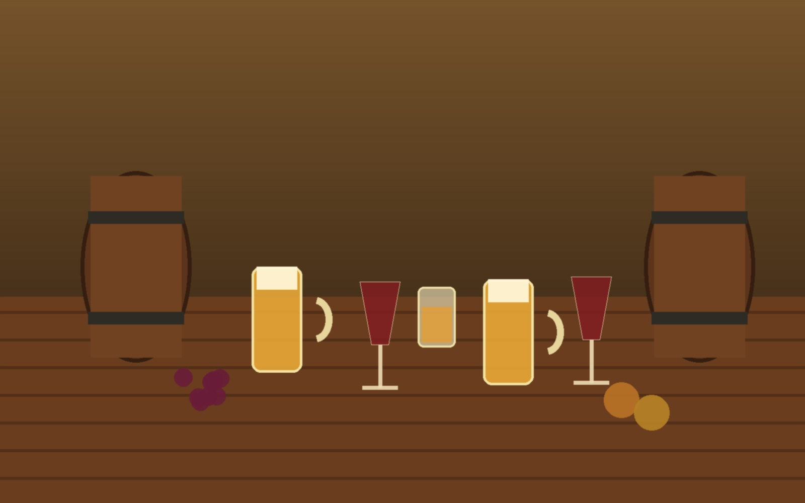
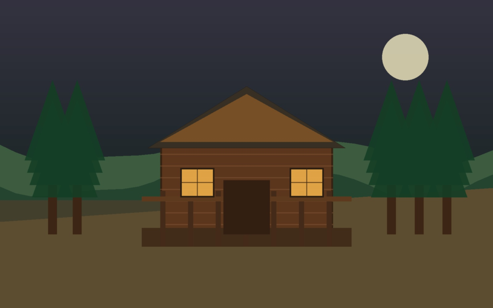
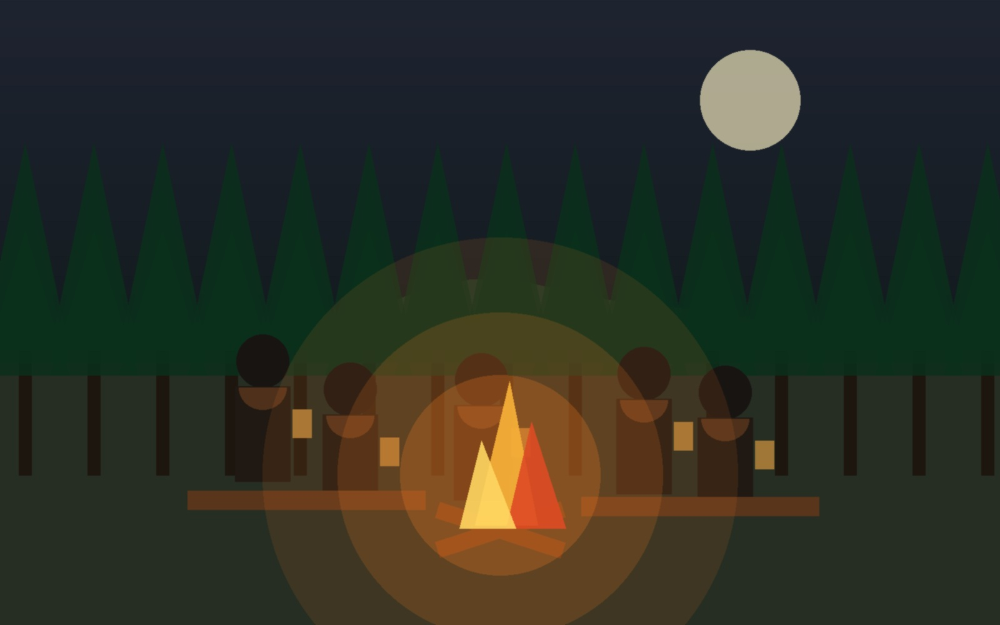
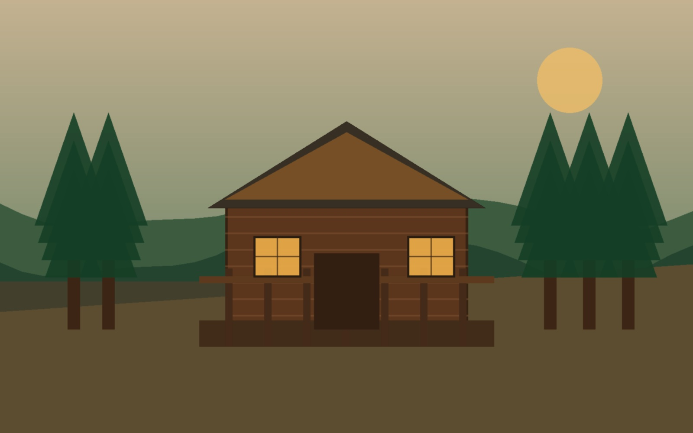
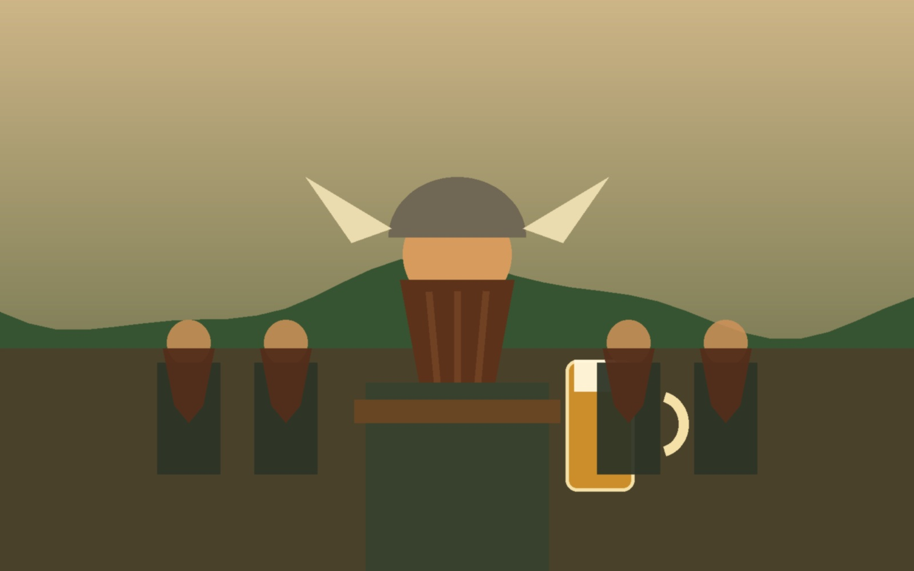

Gesetze
Amtlich verkündet, regelmäßig erweitert und grundsätzlich mit einem Augenzwinkern zu verstehen.
AnsehenOffiziell inoffiziell · Est. 2024
Schützenheim
Kein richtiges Rathaus. Aber mit den wichtigsten Gesetzen, ehrwürdiger Veranda und ausreichend Grundnahrungsmitteln für sachliche Beschlüsse.
Das Rathaus am Hirschberg ist ein Ort der Gemeinschaft, der gepflegten Beratung und der spontanen Amtsstunde am Hang. Hier regieren Freundschaft, Respekt, Humor und gesunder Menschenverstand.
Eigentlich handelt es sich um ein Garten-Grundstück mit schöner Hütte und Veranda. Im Alltag trägt es jedoch den würdigen Namen „Rathaus am Hirschberg“.
Die Amtsgeschäfte werden nach Wetterlage, Anwesenheit und Getränkestand geregelt. Beschlüsse erfolgen mit Handschlag, Kopfnicken oder Nachschenken.
Amtlich verkündet, regelmäßig erweitert und grundsätzlich mit einem Augenzwinkern zu verstehen.
AnsehenRegelmäßig am Lagerfeuer. Tagesordnung: Bier kalt halten und Probleme warm lösen.
Ansehen
Die wichtigste Behörde des Hauses. Zuständig für Motivation und Diplomatie.
Ansehen
Veranda, Hütte und Hanglage bilden den offiziellen Sitz der inoffiziellen Verwaltung.
AnsehenNicht im Bundesgesetzblatt, aber dafür im Herzen fest verankert.
Bier schützt vor Durst, schlechter Laune und trockenen Kehlen.
Ein Williams belebt die Geister und fördert gute Ideen.
Obstler hilft immer: bei Kälte, bei Wärme, bei Freude und bei Leid.
Trollinger stärkt die Gemeinschaft und den Gesprächsfluss.
Lemberger sorgt für Standhaftigkeit bei allen Abstimmungen.
Rosé ist die diplomatische Lösung in allen Fragen.
Weiß- oder Weißherbst bringt Klarheit in trübe Angelegenheiten.
Ab 22 Uhr entscheidet nicht mehr der Kopf, sondern das Herz – und manchmal der Wirt.

Die Ratssitzungen finden regelmäßig und situationsabhängig am Lagerfeuer statt. Anträge werden mündlich eingebracht, Beschlüsse per Zustimmung, Kopfnicken oder Nachschenken gefasst.
Die offizielle Übersicht der wichtigsten Amtsmittel.
Bilder ohne eingebauten Text – der Text liegt sauber in der Webseite.


Angaben gemäß § 5 TMG
Matthias Schädel
Hirschberg 1
74182 Obersulm
Deutschland
E-Mail: matthias.schaedel@gmail.com
Hinweis: Diese Webseite ist ein privates Spaßprojekt. Das „Rathaus am Hirschberg“ ist kein offizielles Rathaus und keine öffentliche Behörde.
Nach oben